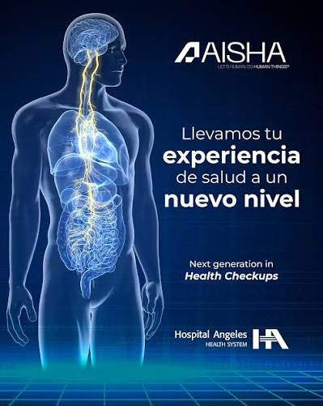

AISHA
¿Qué es AISHA?
Tecnología de salud preventiva que combina resonancia magnética, inteligencia artificial y experiencia médica.

AISHA MRI combina una resonancia magnética de cuerpo completo con inteligencia artificial y la experiencia de médicos especialistas para apoyar una evaluación preventiva.
Una tecnología orientada a la prevención
El estudio permite obtener imágenes detalladas de distintas estructuras anatómicas y procesarlas mediante sistemas de inteligencia artificial.
¿Qué integra?
- Resonancia magnética de cuerpo completo.
- Análisis mediante inteligencia artificial.
- Revisión por médicos radiólogos especialistas.
- Acceso digital a resultados mediante AISHA Health Record.